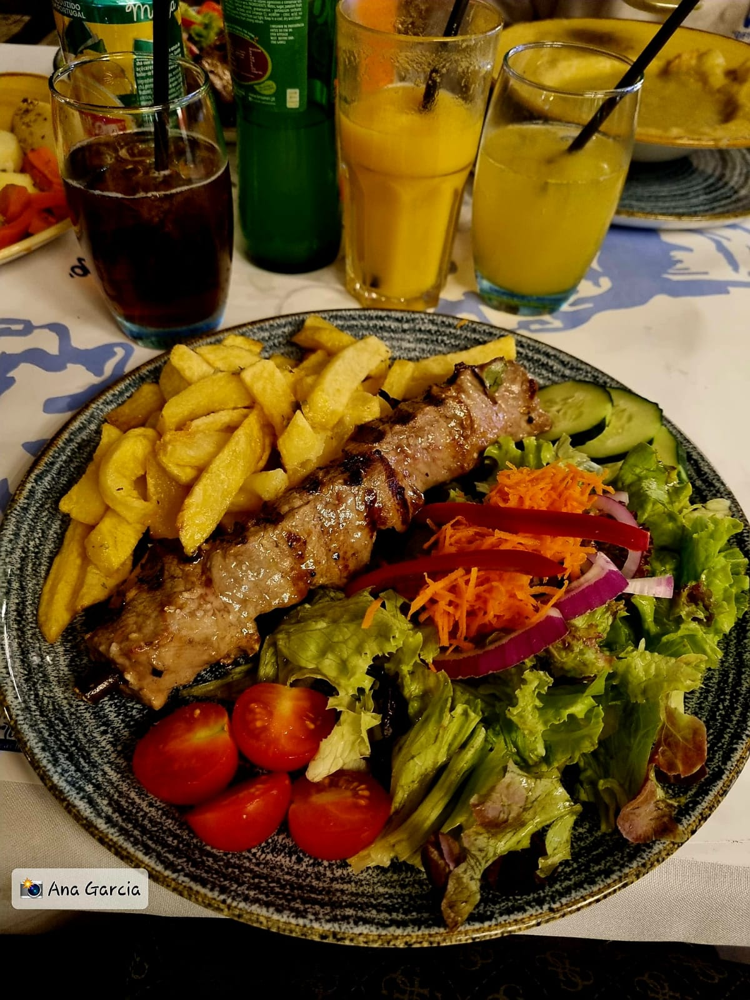

Madeira - Uma obra de arte


A Madeira
Vídeo apresentativo sobre a Madeira
A ilha da Madeira é uma ilha portuguesa, situada no Oceano Atlântico. Esta encontra-se a oeste da costa africana e a cerca de 1.000 km a sudoeste de Lisboa. Esta ilha contém uma beleza natural, um clima tropical, um património cultural bastante rico e uma variedade gastronómica de deixar qualquer pessoa de “água na boca”.
Ilha da Madeira - Mar e reserva de bananas
Como primeiro ponto importante na ilha, temos o Funchal, considerado a capital da Madeira e o centro cultural e turístico muito apreciado. Neste podemos visitar museus, galerias de arte e monumentos históricos. A cidade é ainda conhecida pelo seu famoso mercado de peixe e pela celebração da Festa da Flor, um festival anual que exibe flores e comemora florais por toda a cidade.
Funchal
Nesta ilha podemos encontrar montanhas altas, vales profundos, florestas exuberantes e uma costa recortada.
Floresta Fanal
Trilho
Parque Florestal das Queimadas

Cabo Girão
O ponto mais alto da ilha é o Pico Ruivo, que atinge 1.862 metros de altura. Neste ponto da ilha podemos observar paisagens incríveis sobre a ilha.
A ilha da Madeira é mundialmente conhecida pela sua rica produção de vinho Madeira, que é um vinho bastante doce e consumido como aperitivo ou sobremesa.
A gastronomia da ilha é influenciada pelos sabores do mar, como o peixe-espada preto e o atum, e ainda pelas frutas tropicais e vegetais cultivadas na ilha.

Mercado dos Lavradores

Mercado dos Lavradores
Em suma, a Madeira é uma ilha encantadora que oferece uma mistura única de beleza natural, gastronomia, património cultural e atividades ao ar livre, incluindo caminhadas, mergulho, surf e parapente. É um destino turístico popular e acolhedor com muitas coisas para ver e fazer e, o melhor de tudo, encontra-se bem pertinho de Portugal Continental, sendo uma ótima opção de escolha.

Piscinas de Porto Moniz

Câmara de Lobos

Câmara de Lobos
Praia Porto do Seixal
O que visitar
A Ilha da Madeira é um destino turístico popular devido às suas paisagens deslumbrantes, clima ameno e ambiente relaxante. Aqui estão algumas das atrações turísticas que você pode visitar na Ilha da Madeira:
- Casas Típicas de Santana:Diversas Casas Típicas de Santana;
- Jardim Botânico: um jardim exuberante com uma grande variedade de flores e plantas;
- Levada Walks: a Ilha da Madeira é famosa por seus passeios de Levada - canais de irrigação que atravessam a ilha e oferecem vistas espetaculares;
- Pico do Arieiro: uma das montanhas mais altas da Ilha da Madeira, com vistas panorâmicas incríveis
- Mercado dos Lavradores: um mercado colorido e vibrante, com uma grande variedade de frutas, legumes, flores e artesanato local;
- Funchal: a capital da Ilha da Madeira, com uma grande variedade de restaurantes, bares, lojas e museus, incluindo o Museu de Arte Sacra e o Museu Cristiano Ronaldo;
- Cabo Girão: um dos penhascos mais altos da Europa, com vistas deslumbrantes sobre o oceano
- Praia do Porto Santo: uma praia de areia branca e água cristalina, localizada na ilha vizinha de Porto Santo;
- Monte Palace Tropical Garden: um jardim exótico com uma grande variedade de plantas tropicais e vistas panorâmicas da Ilha da Madeira;
- Fortaleza de São Tiago: uma fortaleza histórica localizada em frente ao porto do Funchal, com um museu de arte contemporânea;
- Grutas de São Vicente: uma série de cavernas naturais com formações rochosas impressionantes, incluindo estalactites e estalagmites;
- Ribeira Fria: Visite a Ribeira Fria e conheça as trutas de diversos tamanhos;
- Monte: Faça uma visita ao monte e desça nos carrinhos de Cesta no Monte e aproveite de vá de Teleférico do Funchal até ao Monte e desça nas cestas.
Casas Típicas de Santana

Monte Palace Tropical Garden

Ribeira Fria

Teleférico

Pico do Areeiro

Pico do Areeiro

Pico do Areeiro

Pico do Areeiro
Pico do Areeiro
Pico do Areeiro
Carrinhos de Cesta no Monte
Teleférico
O que comer
A Ilha da Madeira é famosa por sua culinária rica e diversificada, com influências:
A portuguesas, africanas e americanas. Aqui estão algumas das comidas típicas da região:
- Espada Preta: um peixe que é abundante na região e pode ser encontrado em muitos restaurantes. Ele é frequentemente servido grelhado com banana da terra e batatas;
- Bolo do Caco: um pão tradicional que é cozido em uma pedra quente e é geralmente servido com manteiga de alho;
- Lapas: um molusco que é uma especialidade local e é frequentemente servido grelhado ou num guisado;
- Milho frito: uma iguaria feita com milho frito, temperado com alho e coentro;
- Poncha: uma bebida típica da Madeira feita com aguardente de cana, suco de limão, açúcar e mel. É uma bebida alcoólica forte e doce;
- Bolo de Mel: um bolo escuro e denso, feito com mel, nozes e frutas cristalizadas;
- Vinho Madeira: um vinho fortificado produzido na região da Madeira. Ele tem um sabor único, devido ao processo de envelhecimento em barris de carvalho.
Esses são apenas alguns dos pratos típicos da Ilha da Madeira. Há muitos outros pratos deliciosos para experimentar enquanto você estiver lá.

Espetada em pau de Loureiro
Peixe Espada Frito

Pão de Alho
Lapas
Poncha
Onde comer
A Ilha da Madeira é conhecida por sua gastronomia variada e deliciosa, e há muitos restaurantes na ilha que oferecem pratos locais e internacionais. Aqui estão algumas sugestões de restaurantes para experimentar na sua viagem à Ilha da Madeira:
- Restaurante A Parreira: localizado no coração da cidade do Funchal, este restaurante oferece pratos típicos da Madeira, como espetadas de carne, lapas e bolo do caco;
- Restaurante O Lagar: situado em Câmara de Lobos, este restaurante serve uma variedade de pratos de peixe e marisco, incluindo a famosa espada preta;
- Restaurante Gavião Novo: localizado em Santa Cruz, este restaurante tem uma vista panorâmica da costa e oferece uma culinária de fusão, combinando sabores tradicionais da Madeira com técnicas modernas;
- Restaurante Casa Velha do Palheiro: situado em uma mansão histórica nos arredores do Funchal, este restaurante oferece uma experiência gastronômica refinada, com pratos elaborados e uma extensa carta de vinhos;
- Restaurante Sabores do Forte: localizado em São Tiago Fort, no Funchal, este restaurante oferece uma vista deslumbrante do mar e do porto, além de pratos locais deliciosos e bem preparados.
Esses são apenas alguns dos muitos restaurantes excelentes que você pode encontrar na Ilha da Madeira. Deve explorar as opções disponíveis e experimentar alguns pratos locais deliciosos enquanto estiver lá.